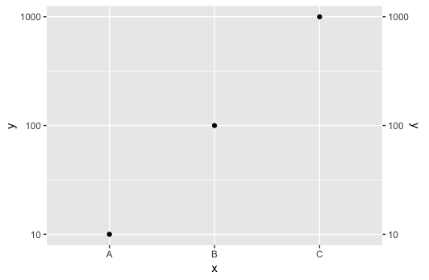
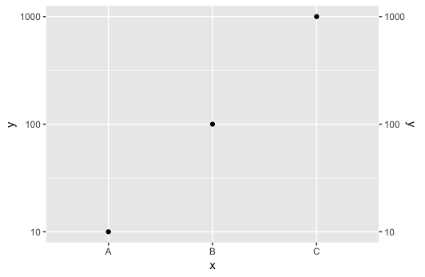

scales 1.0.0 release & my create-your-own-adventure internship
Broad strokes: A glimpse at what I did this summer
- scales release 1.0.0
- A lot of documentation!
- ggplot2 debugging and new feature exploration
- setting geom aesthetics via themes
- fixing some bugs in the sec.axis api
- some remaining puzzles
Bean counting
- scales 1.0.0:
- opened 19 PRs
- merged 39 PRs
- 24 contributors to the 1.0.0 release
- ggplot2, post 3.0.0 release
- opened 12 PRs (1 closed, 4 merged, 7 open, 4-5 to come…)
Merged PRs in 3 tidyverse packages: scales, ggplot2, and lubridate!
First Steps : scales 1.0.0
- issue triaged
- revived old PRs
- moved into r-lib
- updated readme
- built new pkgdown site
Improved log_breaks()
In scales 1.0.0, log_breaks() returns integer multiples of integer powers of base when finer breaks are needed (@ThierryO, #117).
Upon release this will change the default breaks of every scale_*_log10() call in ggplot2
ggplot2 features, fixes, and docs
Since ggplot2 3.0.0 was release about halfway through my internship, I started with a lot of docs.
Several PRs just doing careful review of documentation of the most visited reference sites and general cleaning (spell-check, consistency)
Initiated CII badging process
Linux Foundation, Core Infrastructure Initiative Best Practices Badging
- Passing badge achievable with security assurance.
- Silver badge achievable with some documentation and security review.
- Gold badge achievable with significant documentation and security changes.
My notes about the procedure for ggplot2. More detail in Issue 2700.
Setting aesthetics from themes – PR 2749
Feature : allow certain default aesthetics to be set by the plot theme.
- achieve better default behaviours (e.g. plotting white points by default, instead of black, when using
theme_dark())
- allow user created themes to more easily control default aesthetics.
Setting aesthetics from themes – PR 2749
Custom themes can now set a default colour, colour accents (useful for things like geom_smooth()), fill, a fill accent, and/or alpha.
Other aesthetics like size or linetype could be added as well, for now the PR only addresses colour aesthetics.
Aesthetic and parameter behaviour is left intact – mapped aesthetics override defaults, and parameters override both.
Examples
my_theme <- theme(geom = element_geom(colour = "purple",
fill = "darkblue"))
ggplot(mpg, aes(displ, hwy)) + geom_point() + my_theme

ggplot(mpg, aes(displ, hwy)) + geom_col() + my_theme

theme_dark() now with lighter fill and colour defaults.- Changes are fed to legend to handle discrete values properly
ggplot(mpg, aes(displ, hwy, shape = drv)) +
geom_point() + theme_dark()

Secondary Axis work
After discussion with @thomasp85, I simplified the AxisSecondary code to fix sec.axis behaviour for log transforms
df <- data.frame(x = c("A", "B", "C"),
y = c(10, 100, 1000))
ggplot(data = df, aes(x, y)) +
geom_point() +
scale_y_log10(sec.axis = dup_axis())
 

Secondary Axis work
The simplest way to do this was to incorporate the primary axis transformation directly into the creation of the secondary scale:

Sec.axis datetime support
By incorporating the primary axes transformation in the source, it’s trivial to add secondary axis support for date and datetime scales (upcoming PR).
Some remaining puzzles: Right to left plotting
This was mostly an adventure in curiosity (for both Irene and I!) but would be a nice international feature to add. Currently at least one user is turning to plotly to do this because html handles text encoding better and the placement of the primary axis can be user specified.
Adjusting coord_flip into a new coord_mirror, creating theme_rtl() to set proper text and legend alignment, and implementing scale_x_reverse() with continuous axes, allows for right to left plotting in ggplot2.
Obviously a polished solution would combine all three of these into a single command or setting.
This currently resides only on a branch of my fork but perhaps soon to a PR near you!
Some remaining puzzles: Profiling

Some remaining puzzles: The worst bug
#> Error in grid.Call(C_textBounds, as.graphicsAnnot(x$label), x$x, x$y, :
#> polygon edge not found
- Only reproducible using Quartz and RstudioGD
- Caused intermittently when combining special characters and text in axis tick labels